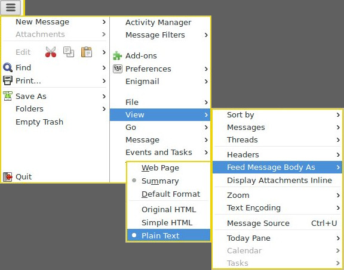
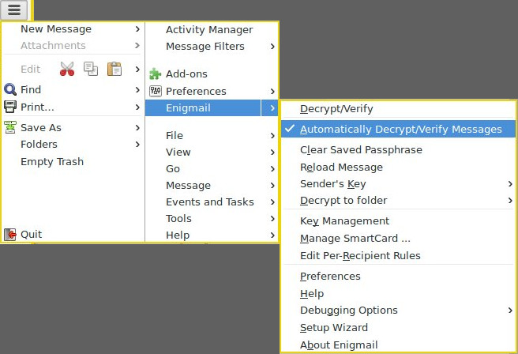

How come, whenever there is a security issue, it is always called “FUD” on this forum?
Tor is totally safe, and shouldn’t be questioned. PGP is totally safe. etc etc Anyone who claims otherwise is just spreading “FUD”.
Seems like complacency is most important on these forums. Certainly not critical thinking.
We don’t even know what the vulnerability is yet, and it’s already being labelled as “FUD”. This obviously does nothing besides put people in harm’s way.
Some of us are using Whonix for a reason, not just because we think it’s neat and gives us some sort of 1337 h@x0r cred.
Are you responding to my post?!? The comments I quoted are advocating for exactly critical thinking - instead of hype and hysteria.
No one is claiming that a vulnerability doesn’t exist. People are questioning whether disabling PGP (per Schinzel’s tweet) is really warranted. It seems at this point that disabling remote content is sufficient, but we’ll know more as the story develops.
I have no idea what experiences you’ve had on this forum but please leave that baggage elsewhere and stay on this topic.
Press release from gnupg: https://lists.gnupg.org/pipermail/gnupg-users/2018-May/060334.html
OpenPGP has defended against this attack for the past 18 years using authenticated encryption. (S/MIME may be vulnerable but shouldn’t be relevant for Whonix users.)
Statement from enigmail: https://sourceforge.net/p/enigmail/forum/announce/thread/527a26fc/
Enigmail previously had some susceptibility to it, but as of Enigmail 2.0 we’ve closed up all the leaks on our side of things. There is still a small bit of attack surface in Thunderbird. The code to fix that has been checked into Thunderbird and will be part of the next Thunderbird releas
All of Debian is still on Enigmail 1.99. The statement was very brief and lacked any details about potential vulnerabilities in versions pre-2.0. The key question we would like to know is how enigmail 1.99 handles a missing MDC (Modification Detection Code). I would expect a Debian security update shortly for both Thunderbird and Enigmail.
Current Debian repo versions:
- Thunderbird 52.7
- Enigmail 1.99
In the meantime:
- disable HTML mails:

- (extra caution) uncheck Auto Decrypt and use other app (like KGpg Editor) to decrypt ciphertext

there’s no need for logical fallacies. in this particular instance, it is fud. “pgp” wasn’t broken or cracked. email clients were exploited. uninstalling pgp/gpg/enigmail, wasn’t required. disabling viewing mail in html mode and fetching remote content was. two things disabled by default with torbirdy in thunderbird, btw.
a much more dangerous complacency is repeating that the sky is falling when it demonstrably isn’t.
paper was linked on the page in the thread.
excellent.
Why let any email client have access to clear text message at all? Encrypt using kGpg, paste into the email client. Decrypt what you get in kGpg. No need to trust the email clients at all.
+1
From related wanderings:
OpenPGP uses hybrid encryption (both symmetric & assymetric together)
Unless you change the default options of gpg or you encrypt to at least
one old key there is no problem at all. I assume that 99.9% of all GPG
created messages are safe because they use MDC in away which allows the
receiving GPG to hard fail if the MDC was stripped.The only emails that are in danger of being leaked via the MDC issue
are those that were originally encrypted using one of the obsolete
cipher suites.BUT
We should also be very careful to note that none of this discussion
thread applies to the MIME concatenation vulnerability, which is a
problem in Thunderbird and other mail clients, and which cannot be
solved by gnupg.
(src)
Do my corespondents request an obsolete cipher?
user@host:~$ gpg --edit-key 0x2eeaccda
pub 4096R/0x8D66066A2EEACCDA created: 2014-01-16 expires: 2021-04-17 usage: SC
trust: unknown validity: unknown
sub 4096R/0x3B1E6942CE998547 created: 2014-01-16 expires: 2021-04-17 usage: E
sub 4096R/0x10FDAC53119B3FD6 created: 2014-01-16 expires: 2021-04-17 usage: A
sub 4096R/0xCB8D50BB77BB3C48 created: 2014-01-16 expires: 2021-04-17 usage: S
[ unknown] (1). Patrick Schleizer <adrelanos@riseup.net>
gpg> showpref
[ unknown] (1). Patrick Schleizer <adrelanos@riseup.net>
Cipher: AES256, AES192, AES, CAST5, 3DES
Digest: SHA512, SHA384, SHA256, SHA224, SHA1
Compression: ZLIB, BZIP2, ZIP, Uncompressed
Features: MDC, Keyserver no-modify
ciphers & digests are strong.
If today has taught us anything, surely it is that flaws in decryption are just as dangerous as flaws in encryption.
(src)
On throwing out OpenPGP because of Efail:
We’ve discovered that locks can be picked, so you should remove
all the locks from your doors right now.
(src)
Using these two principles (the Landauer bound and the Margolus–Levitin limit), we can determine quite accurately how much heat would be released by a computer that brute-forced a 128-bit cipher. The results are profoundly silly: it’s enough to boil the oceans and leave the planet as a charred, smoking ruin.
No talk of Efail on Debian lists that I could find.
I would think the biggest threat is a user opened up a malicious email attachment. A much easier way to steal a PGP key? entr0py ? Also easy to craft (for those who know how).
Maybe easier against novice users? Somewhat harder versus advanced users… Certainly provides motivation for offline private keys - smartcard, qubes split-gpg.
From https://www.gnupg.org/gph/en/manual/c481.html
A good passphrase is absolutely critical when using GnuPG. Any attacker who gains access to your private key must bypass the encryption on the private key. Instead of brute-force guessing the key, an attacker will almost certainly instead try to guess the passphrase.
But… from https://www.qubes-os.org/doc/split-gpg/
We should make a rather obvious comment here that the so-often-used passphrases on private keys are pretty meaningless because the attacker can easily set up a simple backdoor which would wait until the user enters the passphrase and steal the key then.
Wasn’t looking in the right places.
enigmail: https://bugs.debian.org/cgi-bin/bugreport.cgi?bug=898630
thunderbird: https://bugs.debian.org/cgi-bin/bugreport.cgi?bug=898631
Debian Security Advisories are likely.